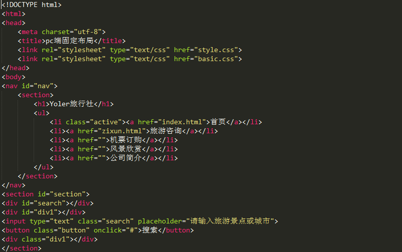
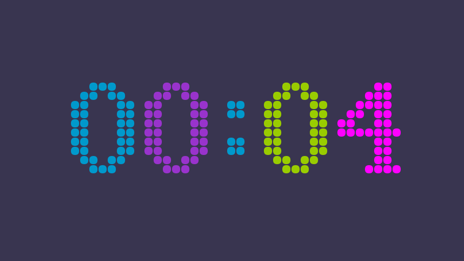
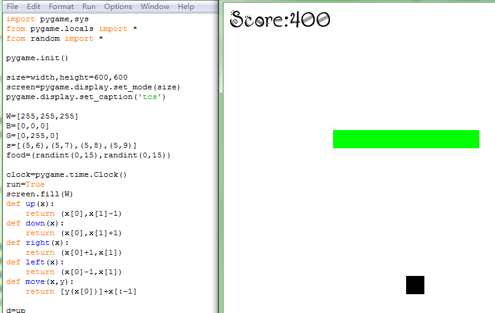

个人技能
HTML5
CSS3
JAVASCRIPT
JQUERY
DOM编程
REACT
METEOR
PYTHON
DJANGO
项目经验

旅游网站制作
主要是使用HTML标记、div+css3等前端WEB技术进行网站的开发与制造。 该项目是一个旅游公司的旅游咨询简介，包括景点介绍，风景欣赏，公司简介等。网页的制作采用H5+css3技术，布局清晰，熟练掌握盒模型，相对定位布局，对h5的标签有深入的理解。
绚丽时钟
该项目是一个简单的倒计时效果，主要使用JavaScript、HTML5的canvas，css3等前端技术。 通过js编写一个矩阵，用0和1来表示是否绘制小球，根据矩阵中0和1的位置通过canvas绘制出相应的小球数字，通过setIntervar函数每隔1秒重新绘制，小球的颜色通过一个数组随机抽取，这样看起来就会一秒钟倒数一个数，颜色不断变化，绚丽多彩。


python版贪吃蛇
主要使用pygame模块，用canvas来绘制贪吃蛇及食物。 贪吃蛇的移动和方向控制通过函数逻辑实现，可响应键盘按键操作，该项目综合用到python的各种知识，对列表、字典、字符串等数据结构都有运用，整个过程采用面向对象编程，贪吃蛇的绘制、移动、食物的出现均采用函数封装。通过该项目的实践，巩固了我对python的掌握，将一些零散的知识综合的运用到一个项目中。